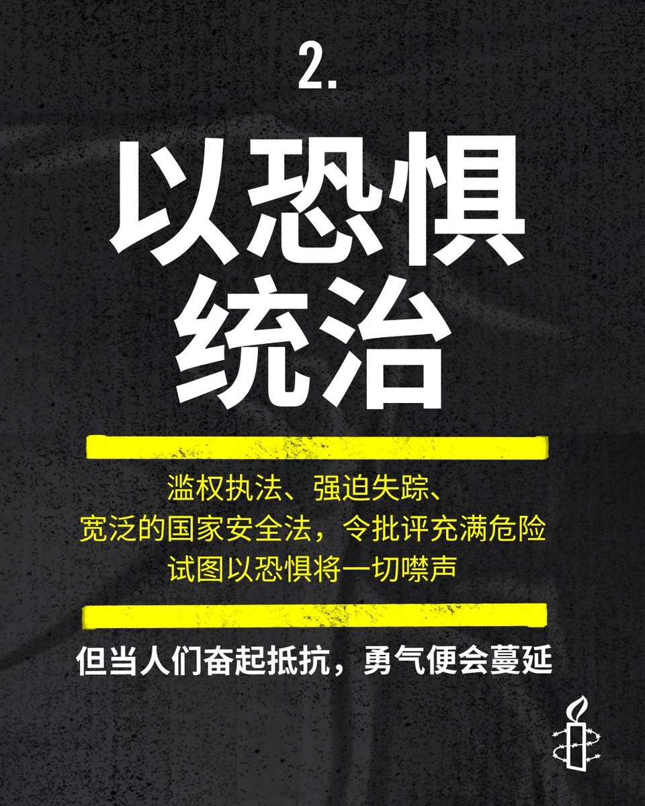

RT @amnestychinese: 2025 年让我们清楚看见，当权力失去制衡会造成多大的伤害。
📢人民正在反击，抵抗力量正在壮大。我们必须竭尽所能，阻止威权手段不断扩张。
🔗了解全球人权现况： https://t.co/P3jqiahDbX https://t.co/G …
📢人民正在反击，抵抗力量正在壮大。我们必须竭尽所能，阻止威权手段不断扩张。
🔗了解全球人权现况： https://t.co/P3jqiahDbX https://t.co/G …
